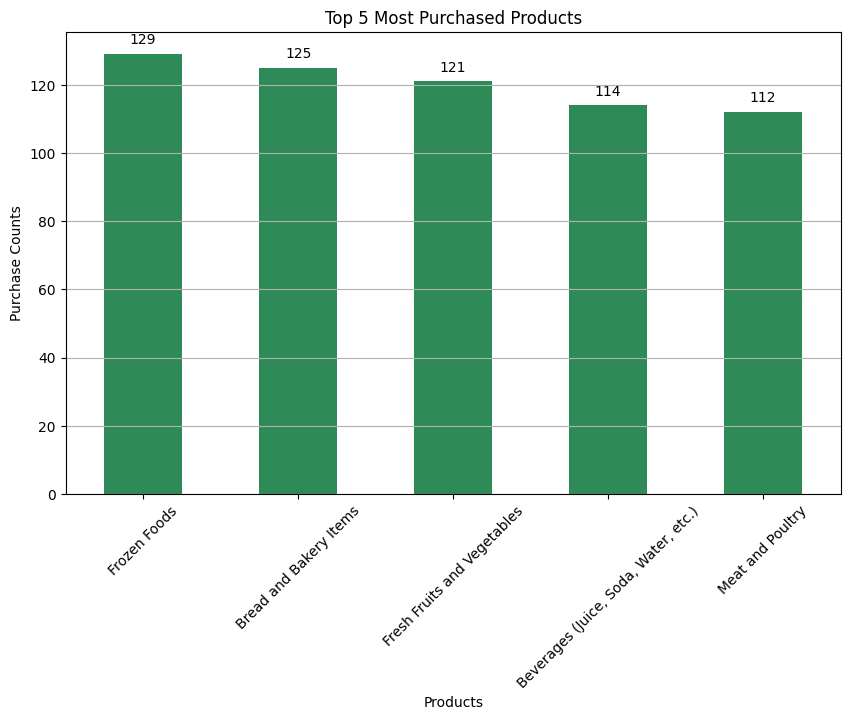
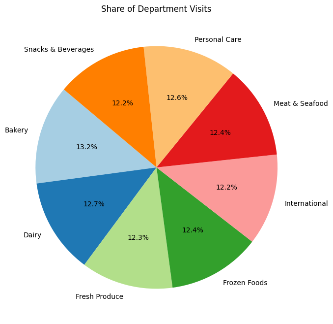
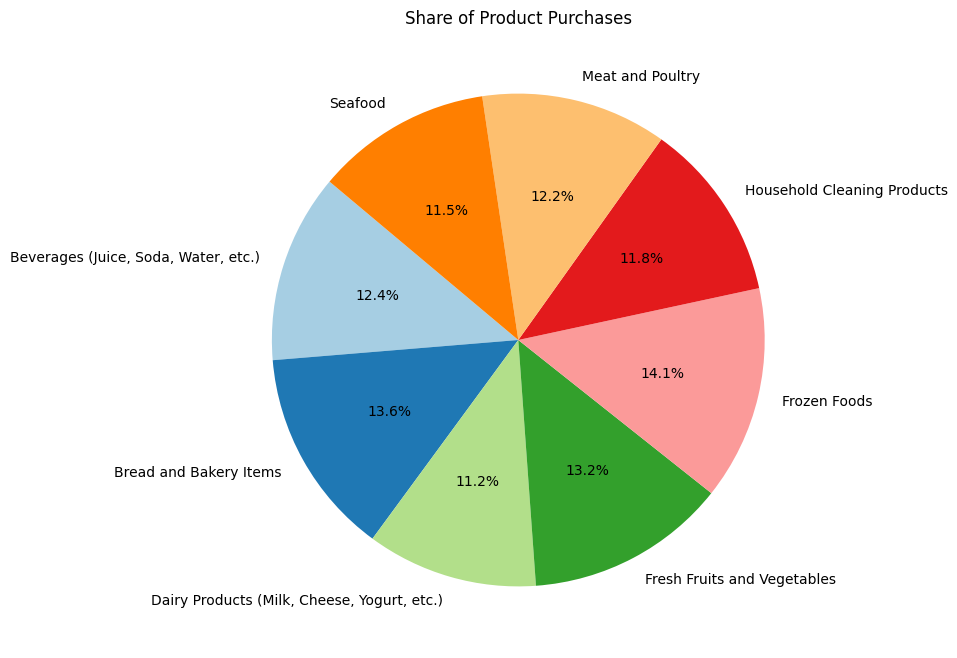
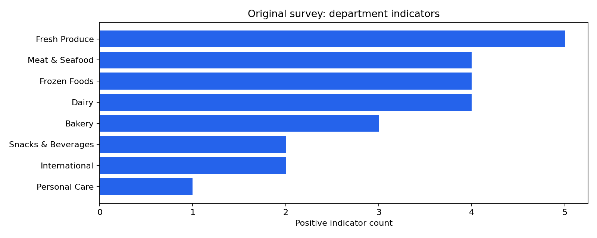
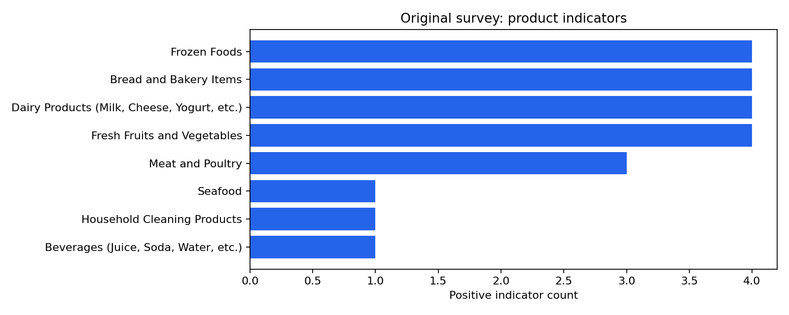

Customer Survey Indicators
Author: Mohammed Adeen Shaik
Review date: 11 October 2026
Research question
Which departments and products receive the most binary selections in the supplied tables?
Data and provenance
Original survey workbooks plus explicitly simulated expanded workbooks.
Source materials are linked from the repository README. Input fingerprints are recorded in the evidence manifest so a reader can identify the exact committed artifacts used in this review.
Method and analytical rationale
Indicator columns are checked as binary and summed. Rankings count selections, not sales units. Original and expanded results must be interpreted separately.
Findings and interpretation
The original survey workbooks are a small observed sample. DataModeling.ipynb expands them with independently simulated binary observations; Data_Analysis.ipynb plots expanded observations. Those charts demonstrate visual reporting only. They do not strengthen population inference; use separately labelled original-sample summaries for empirical interpretation.
Limitations
Expanded observations are simulated for visualization practice. Independent random binary values do not reproduce customer correlations. Multiple selections mean shares of selections are not shares of unique customers.
Reproduction
Use the setup commands and input contract in the repository README. Open the notebook catalogue for annotated code and saved outputs. Keep raw records and model binaries local; public reports contain aggregate results or source-embedded figures.
Final visual results

Figure from Data_Analysis.ipynb, original code cell 17.

Figure from Data_Analysis.ipynb, original code cell 19.

Figure from Data_Analysis.ipynb, original code cell 21.

Reproduced aggregate figure: department-original.png.

Reproduced aggregate figure: product-original.png.